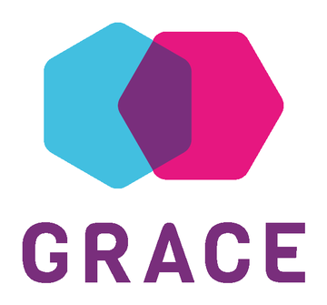

Rozšířená realita
Funguje na Androidu (Chrome) i na iPhonu a iPadu (Safari). Vyžaduje zabezpečené připojení (https) a povolení kamery.
Škola plná kreativity
samé zábavné aktivity
Cestovní ruch a grafický design
není to žádný bizar
Atmosféra je tu rodinná
skvělá je každá hodina
Škola plná zábavy
není to bez námahy
ale stojí to za to
vyděláš si zlato
a zažiješ nejlepší léta svého
života